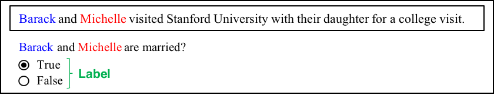
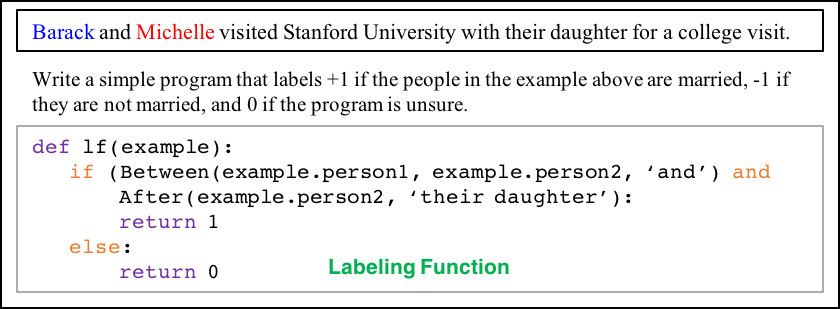
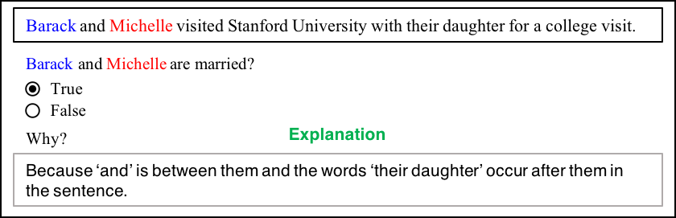
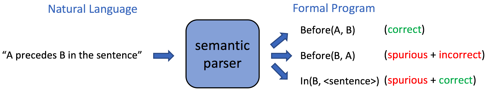
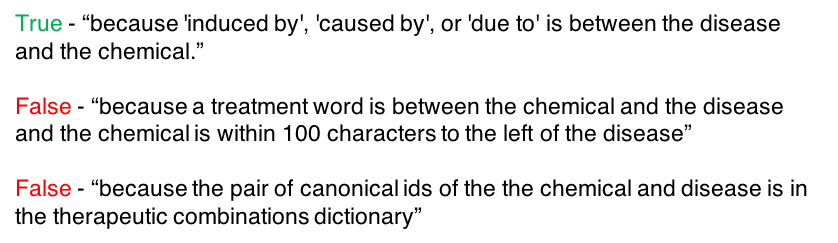
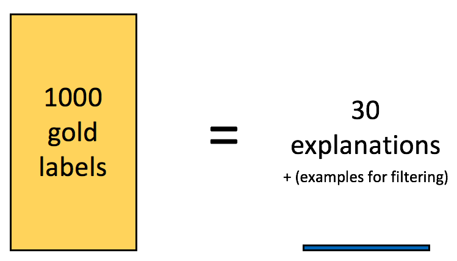

Babble Labble:
Learning from Natural Language Explanations
Post by Braden Hancock, Percy Liang and Chris Ré
And referencing work by many other members of Hazy Research
Modern machine learning models that automate feature extraction (such as deep neural nets) can do incredible things with enough labeled training data! The hard part is getting enough labeled training data to properly train their thousands (or millions!) of parameters. And in the age where "data never sleeps", the bottleneck isn’t getting the data— it’s getting the labels.
We propose Babble Labble, a framework for generating labels for large training sets from natural language explanations. In this framework, a semantic parser converts explanations into executable functions, which feed a data programming application and ultimately train a powerful downstream classifier for a given task. By learning from natural language explanations of labeling decisions, we achieve comparable quality to fully supervised approaches with a fraction of the data.
Imagine you’re building a classifier to predict whether or not two people mentioned in a sentence are married. You've collected a few million sentences to draw from, and you've hired some Mechanical Turkers (humans online who perform simple tasks for money) to help you collect some labels. How you should have them label your data?
Imagine a Turker (let's call him Joe) who sees the following example:In traditional supervision, labelers find reasons for giving certain labels, return only the labels, then make algorithms work to rediscover the reasons.

Joe reads the sentence. He looks at the words Barack and Michelle, and the words around them. He decides that because Barack and Michelle have the word ‘and’ between them, and the words ‘their daughter’ occur later in the sentence, they’re likely married. Having found a solid reason for labeling True, Joe marks “True”. As Joe goes through the data set, specific reasons for labeling examples one way or another come up over and over again, but all we ever collect is the binary label “True” or “False”.
Downstream, you'd like your classifier to look at this example and others like it and learn to use some of the same reasons--or *features*--that Joe found, but instead of conveying these reasons directly, we expect the classifier to learn them from scratch using nothing but "True"s and "False"s. (It’s like the classifier keeps asking for directions and instead of pointing exactly where to go, the Turkers just tease it with a vague “you’re getting warmer” or “you’re getting colder”!). Especially in situations where large sets of labels aren't readily available, this seems like an incredibly wasteful process!
In data programming, users write labeling functions that are used to assign noise-aware labels to unlabeled data.
In a data programming approach, instead of providing binary labels, Joe writes functions (called "labeling functions" or LFs) that label data "accurately enough". These functions don't necessarily have perfect recall or precision, and they are allowed to overlap and conflict with one another.

By looking at how often the labeling functions agree or disagree with one another, we learn estimated accuracies for each supervision source (e.g., an LF that all the other LFs tend to agree with will have a high learned accuracy, whereas an LF that seems to be disagreeing with all the others whenever they vote on the same example will have a low learned accuracy). And by combining the votes of all the labeling functions (weighted by their estimated accuracies), we’re able to assign each example a fuzzy "noise-aware" label (between 0 and 1) instead of a hard label (either 0 or 1).
Three big pros of this approach are:
We've improved the scalability of our labeling approach: each LF can contribute label information to tens, hundreds, or thousands of examples--not just one.
We now have a use for unlabeled data. We can apply our LFs on all the unlabeled examples to create a whole lot of not perfect, but “good enough” labels for a potentially huge training data set.
These labels can be used to train a powerful discriminative classifier with a large feature set that generalizes beyond the reasons directly addressed by the LFs. (So even if we only use 100 LFs, the examples they label may each have thousands of features whose weights are learned by the discriminative classifier).
One big con of this approach is:
The Babble Labble approach uses a semantic parser to convert natural language explanations into “accurate enough” labeling functions for use with data programming.
Babble Labble converts natural language (babble) into labels (or labbles—we've heard it both ways). Now, Joe's labeling interface looks like this:

What are the benefits of having a natural language interface? Here are a few:The world is moving to conversational interfaces. Sure, I can type, but sometimes I prefer to just say “Hey Google/Siri/Alexa” and talk to my computer/phone/television/toaster.
Even if you could count on all Turkers being able to code, you can be fairly certain it would take them longer to write small programs than it would for them type a sentence or two.
There’s a lot of natural language in the world. In its current relative infancy, Babble Labble works with explanations that were meant to be used for supervision. But imagine a future where your virtual assistant can learn how to classify certain things in the world just by reading what people say about them in subreddits and blog comments!
The core component of Babble Labble is a semantic parser. Semantic parsers convert natural language explanations into formal programs (or in our case, labeling functions). Part of the reason why programs are written in programming languages instead of natural languages is because natural language can be ambiguous. This means that a single explanation often maps to many different possible LFs—one that was intended and others that are spurious (but which may also be factually correct).

In a traditional approach, one might use a bunch of labeled data to “train” the semantic parser and learn which of the generated LFs is most likely to be the correct one. But fortunately, in this framework with a downstream application that was made to handle noise, we don't need a perfect parser to still get great results! Just like how we found that we can use a larger set of “accurate enough” labels to train the discriminative model in data programming, we propose that we can use a larger set of “accurate enough” labeling functions to train the generative model in data programming. This may seem a little cavalier of us, but there are reasons for believing this just might work:Reason #1. Common sense filters catch many spurious LFs
With the labeling interface Joe used, each LF comes from an explanation that is tied to a specific example. If the LF’s explanation doesn’t agree with the label given to its own corresponding example, then we can confidently toss it.
If an LF does correctly label its corresponding example, but it does so by naively labeling all examples as True or all as False, then it provides no useful signal and can also be tossed.
Suppose one explanation yielded three LFs that label identically every single example in the large training set extracted from the unlabeled data. While the three LFs may in fact be unique in some way, their semantic difference is small enough that they provide redundant information for our application, and all but one can be tossed.
Reason #2. Data programming mitigates the negative effects of spurious LFs
In the data programming paradigm, labeling functions don’t need to be perfectly accurate to be useful. If a mistake in the semantic parser results in a labeling function that is less accurate than it was intended to be, the generative model will have the opportunity to recognize this when it sees its disagreement with other LFs and reduce its estimated accuracy accordingly.
What if one particularly ambiguous explanation generates a whole bunch of LFs that pass the filters and all agree with each other despite being wrong—won’t that falsely boost their learned accuracies? It would...if we believed that all LFs label independently. But because we are able to automatically learn the dependencies between the LFs in data programming, this mob behavior can be recognized for what it is and voting power of all the LFs participating in this “echo chamber” can be reduced accordingly.
Reason #3. Spurious LFs can be sometimes even helpful!
The labeler’s explanation describes a very specific signal for the learner to pay attention to. In the extremely high dimensional space of all possible features, minor parsing inaccuracies may still result in a relevant signal making it through. For example, the latter half of Joe’s explanation may be misinterpreted by the semantic parser as “the words ‘their daughter’ occur anywhere in the sentence”. While not as specific as the intended explanation, it may end up correctly labeling all of the same examples as the intended function as well as new examples such as “Following the birth of their daughter, Beyoncé and Jay-Z took to Twitter to celebrate.” The key here is that most of what Joe was trying to convey in this case is captured in the string "their daughter"; many imperfect parses will still result in that most important signal getting through just fine.
Using beam search, the 30 explanations were parsed into 61 LFs. Applying the example contradiction filter (using example/explanation pairs) removed 18 of these, the uniform labels filter removed 1, and the redundant signature filter removed 6, resulting in 36 LFs (a “spurious LF” rate of only 17%). The data programming platform, Snorkel, identified 11 dependencies among the LFs, and in one case, a spurious LF ended up having a higher empirical accuracy than the intended one. On this very difficult task: